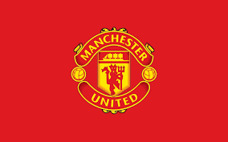

Campeões da CL
FC Bayern de München
O FC Bayern de München é o maior campeão da UBFC Champions League com 4 conquistas junto com outra equipe citada a seguir, a primeira equipe a ser bicampeã da UBFC Champions League conquistando a 2° edição e a 3° edição, a 6° edição, e a 13° edição, o Bayern também é o maior campeão mundial com 2 títulos, sendo assim é o time com mais títulos em geral, na 2°, 3°, e 13° conquista da Champions os times foram compostos somente por Fábio e Elias, e nesses edições seguidas(2° e 3°), que o Bayern foi bicampeão mundial seguido, ja na 6° edição o time foi composto por Fábio, Kaique, Frank, Cleber e Elias, Porém não havendo mundial nessa edição por falta de tempo, e na 13° igualmente.
AC Milan
O AC Milan é um dos maiores campeões da historia da UBFC Champions League, o Milan conseguiu conquistar 4 edições entre elas a 1° edição sendo o primeiro campeão, já as últimas foram conquistadas em sequência na 4° e 5° edição, porém os clubes nem sempre foram os mesmos,
O 1° e 2° título do clube foram conquistados por Eric e Thiago apenas, já no 3° título o time contou com Fábio, Thiago, Elias, Eric, e Cleber, já no 4° título Thiago, Eric e Eliseu foram os campeões da 15° edição, após 10 edições.
O Milan também é campeão mundial uma vez, isso ocorreu porque no 1° e 3° título não houve por motivos de tempo e por ainda não ter sido criado até ali, sendo assim o único título mundial do milan ocorreu no 2° título da Champions.
Manchester city FC
O Manchester City FC é uma equipe muito recente e só surgiu a partir da 8° edição, o time diferente dos acima sempre foi o mesmo time, contando com Fábio, Frank e Thiago, com exceção da 16° edição que só contou com Fábio e Thiago. A equipe é tricampeã da Champions conquistando-os na 8° edição, na 10° edição, e na 16° edição, contendo um título mundial isso na 8° edição, na 10° e na 16° edição não houve por falta de tempo, com isso o Manchester City é uma equipe que teve 100% de aproveitamento isto é de todas as 3 champions que jogou ganhou as 3, e o 1 mundial que jogou ganhou também, sendo a equipe invicta.
FC Barcelona
O FC Barcelona é a única equipe que foi campeã da Champions jogando fora do campo de costume que em 93,8% das vezes foi disputado no boqueirão, a equipe foi campeã no campo do Cruzeiro e também é a única edição, sendo a 7° edição, que teve sua final disputada nos pênaltis, o time também não teve trocas por ser campeão uma vez, contou com Fábio, Eric e Cleber, porém nesse edição não houve mundial por falta de tempo.
Arsenal FC

O Arsenal FC é uma equipe que foi campeã na 9° edição da Champions, possuindo em seu clube Thiago, Eric, Elias, Adriano e Ronaldo Jr, o notório título dessa equipe também vem de uma virada magnífica considerada a maior virada da Champions, isso porque a equipe começou ganhando de 2x0, tomando a virada ficando 2x4, uma das regras dessa edição era a partida ser finalizada com 5 gols de qualquer equipe que assim marcasse, com exceção do 4x4 que prorrogaria a partida até 6 gols, e com 5x5 após a ser partida prorrogada com o 4x4, iria para os pênaltis, o clube após a parada técnica de Ronaldo Jr quando o jogo estava entregue e Ronaldo Jr indo para o gol enquanto Adriano ia para a linha, o que mudou o jogo com 2 gols de Thiago que teve um hat-trick na partida, empatando o jogo em 4x4 prorrogando a 6 gols, depois houve 2 gols de Eric com assistências de Elias e Thiago, a equipe virou a partida em tempo relâmpago se sagrando campeã, porém a equipe perdeu a final do mundial nos pênaltis sendo a primeira equipe que ganha a Champions a perder no mundial o que jamais tinha acontecido.
Borussia Dortmund
O Borussia Dortmund é a equipe que por sua vez foi campeã na 11° edição do torneio diferente de boa parte das equipes, a própria foi campeã com apenas dois jogadores, Elias e Thiago conquistaram esse título quebrando a campanha da equipe que vinha vencendo desde a semi, mesmo com o Borussia Dortmund tendo um gol anulado a equipe se sagrou a vitoriosa do torneio, também não houve mundial por conta do tempo.
Manchester United FC
O Manchester United é a equipe campeã da 12° edição da competição, foi campeã com o time contando com três jogadores, Thiago, Elias e Kaique, o clube fez uma boa campanha, mesmo com um golaço da outra equipe em uma partida de 5x3 não foi possível segurar a equipe que se sagrou campeã, não houve mundial por conta do tempo.
Real Madrid CF
O Real Madrid é a equipe campeã da 14° edição da competição, foi campeã com o time contando com dois jogadores, Fábio e Eric, o clube derrotou o AC Milan que nesse edição contou com Kaique e Elias essa equipe até então inédita, fez uma ótima campanha caindo porém na final para o próprio Real, contudo, o Real Madrid CF acabou caindo no mundial para o Corinthians de Elias e Thiago e se tornou a segunda equipe a ganhar a Champions e perder o Mundial.
SC Internacional
O SC Internacional é um time brasileiro, isso significa que eles nunca ganharam a UBFC Champions League, o título de expressão desse time é a libertadores que por sua vez só tem uma única edição, disputada na quadra do loteamento do Robinho diferente das demais, com jogos de 10 gols, o time contou com Thiago, Fábio, Kaique, Jadson e Frank.